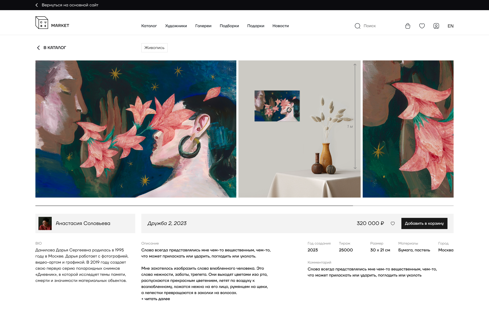
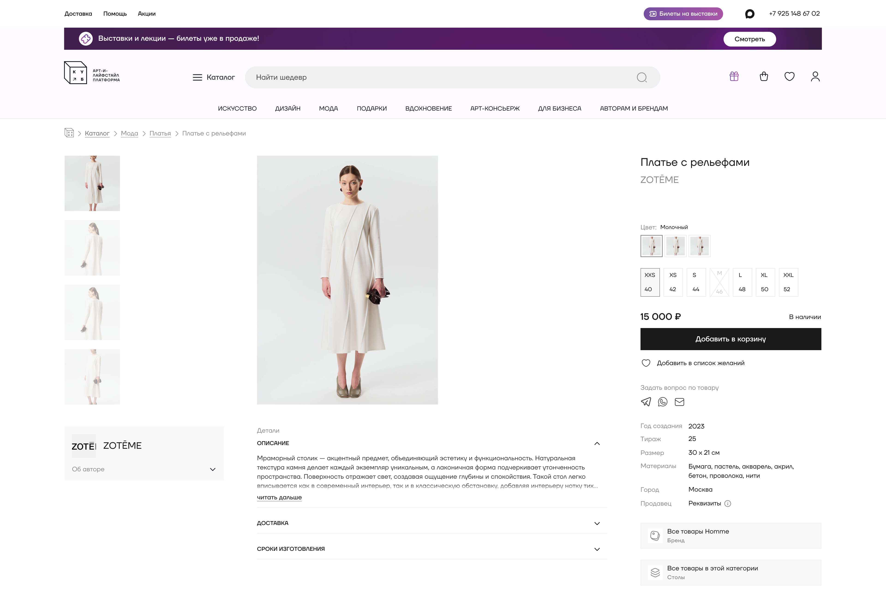
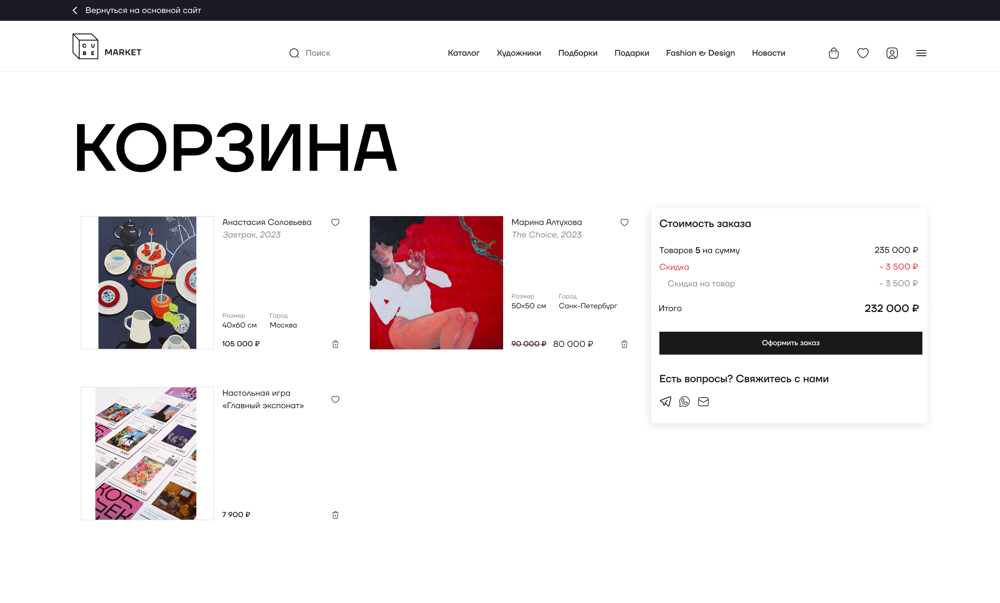
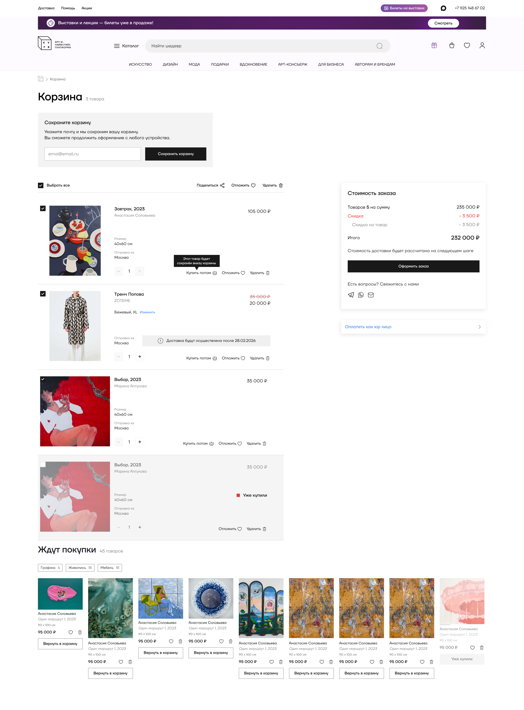

От галерейного магазина к маркетплейсу
From a gallery shop to a marketplace
Работала над развитием Cube.market при переходе от галерейного магазина к маркетплейсу искусства, дизайна и моды. Перепроектировала покупательские сценарии и личные кабинеты продавцов. В кейсе показываю несколько задач из этой работы: от наблюдения за проблемой до реализации решения и проверки результата.
Worked on Cube.market as it evolved from a gallery shop into an art, design and fashion marketplace. Redesigned buyer journeys and seller accounts. This case presents selected problems from that work, from identifying an issue to implementation and outcome review.

Новые категории изменили требования к покупке
New categories changed the purchase experience
Cube.market переходил от небольшого галерейного магазина к маркетплейсу: к искусству добавлялись дизайн и мода, появлялись личные кабинеты продавцов. Интерфейсу предстояло поддерживать и уникальные произведения, и товары с вариантами, размерами и количеством.
Cube.market was evolving from a small gallery shop into a marketplace. Design and fashion joined art, while seller accounts were being introduced. The interface needed to support both unique artworks and products with variants, sizes and quantities.
Изменения затронули разные части платформы: каталог и фильтры, карточку товара, корзину, регистрацию и кабинеты продавцов. Вместо полного обзора редизайна я выбрала три примера из покупательского пути. Они показывают, как я работала с разными задачами: заметностью покупки, управлением составом заказа и подсказками в форме.
The work spanned the catalogue and filters, product pages, cart, registration and seller accounts. Rather than cover every change, I selected three examples from the buyer journey. They show how I approached purchase visibility, control over order contents and guidance within a form.
От обсуждения функций до проверки реализации
From feature discussions to implementation review
На старте куратор галереи, выполнявший роль проджекта, приносил пожелания по функциям. Мы обсуждали их с точки зрения пользовательских сценариев: какую проблему решаем и как изменение повлияет на путь покупателя. Постепенно я стала участвовать в выборе решений до подготовки макетов и обсуждать их напрямую с основателем.
Initially, the gallery curator, acting as project manager, brought feature requests. We discussed the user problem behind each request and its effect on the purchase journey. Over time, I became involved in decisions before design work began and discussed proposals directly with the founder.
Я анализировала Метрику и записи Вебвизора, формулировала гипотезы, проектировала интерфейсы и защищала решения перед командой и основателем. С разработчиками работала напрямую: согласовывала ограничения и проверяла готовый интерфейс. За технические решения и окончательную реализацию отвечал руководитель разработки.
I reviewed analytics and session recordings, developed hypotheses, designed interfaces and presented decisions to the team and founder. I worked directly with developers on constraints and implementation review. The development lead owned technical decisions and final implementation.
Покупку было легко не заметить
The purchase action was easy to miss
В записях Вебвизора я заметила, что на десктопе пользователи часто не докручивали до кнопки покупки. Проверила карточку на своём ноутбуке: при системном масштабе 125% кнопка оказывалась за пределами первого экрана. Даже при 100% она была небольшой и располагалась низко.
Session recordings showed that desktop users often did not scroll as far as the purchase button. I checked the page on my own laptop: at 125% system scaling, the button fell below the first screen. At 100%, it was still small and positioned low on the page.
Моя гипотеза: привычная структура интернет-магазина и более заметное действие покупки помогут пользователю быстрее сориентироваться. Для растущего маркетплейса важно было сохранить внимание к произведению, но сделать цену, параметры и следующий шаг понятными.
My hypothesis was that a familiar shopping layout and a more visible purchase action would make the page easier to navigate. The marketplace needed to keep the artwork in focus while making price, options and the next step clear.


- Перестроила иерархию. Подняла кнопку покупки выше и сделала заметнее. На мобильном закрепили действие покупки внизу экрана, чтобы не возвращаться к нему через длинную страницу.
- Reworked the hierarchy. Moved the purchase action higher and made it more prominent. On mobile, the action stays fixed at the bottom of the screen.
- Улучшила просмотр товара. По нажатию открывается галерея на белом фоне с миниатюрами и увеличением. В открытой мобильной галерее доступны свайпы и увеличение двумя пальцами.
- Improved product inspection. Tapping opens a gallery on a white background with thumbnails and zoom controls. The mobile gallery supports swipes and pinch-to-zoom.
- Добавила пути к альтернативам. Из карточки можно перейти к похожим товарам категории и ко всем работам автора. Информация об авторе уже существовала; я не считаю её новой функцией редизайна.
- Added routes to alternatives. Users can browse similar products in the category and all works by the artist. Artist information already existed and was not introduced by this redesign.
Купить выбранное, а остальное оставить
Buy selected items and keep the rest
Раньше, чтобы оформить только часть корзины, приходилось удалять остальные товары. Я предложила разделить три намерения: купить сейчас, оставить в корзине и сохранить на потом. Это позволяло управлять заказом без обязательного отказа от других находок.
Previously, ordering only part of the cart required removing the remaining items. I proposed separating three intentions: buy now, keep in the cart and save for later. This would let buyers control their order without discarding other finds.


- Выбор товаров для заказа. Чекбоксы определяют состав покупки, сумма пересчитывается только для выбранных позиций. Остальные остаются в корзине после оформления.
- Item selection. Checkboxes define the order, and the total reflects selected items only. Unselected items remain in the cart after checkout.
- Редактирование на месте. Количество, вариант и размер можно изменить прямо в корзине.
- In-place editing. Quantity, variant and size can be changed directly in the cart.
- «Сохранить на потом». Отложенные товары находятся в нижнем блоке корзины. Без входа они сохраняются в текущем браузере; после регистрации и входа доступны на других устройствах.
- Save for later. Saved items sit below the cart. Guests can retain them in the current browser; signed-in users can access them across devices.
- Пояснение расчёта доставки. Указали, что стоимость появится на следующем шаге. Для расчёта нужны город, адрес, состав заказа и выбор способа доставки.
- Delivery explanation. Clarified that shipping is calculated at the next step, using the city, address, order contents and delivery method.
Компромисс с разработкой. Я предлагала показывать приблизительную доставку уже в карточке после выбора города. Решение требовало дополнительного бюджета, поэтому его отложили. Пояснение в корзине сделало порядок расчёта понятнее, но не заменило раннюю оценку стоимости.
Implementation trade-off. I proposed an estimated shipping cost on the product page after city selection. This required additional budget and was deferred. The cart explanation clarified when shipping would be calculated, but did not replace an early estimate.
После обновления конверсия стала выше
Higher conversion in the post-update period
В Яндекс Метрике сравнила четыре полных месяца до обновления корзины и четыре после. Переходный месяц исключила. Использовала одинаковый сегмент: визиты с просмотром URL, содержащего /cart, и цель «Оформил заказ».
In Yandex Metrica, I compared four complete months before the cart update with four after it, excluding the rollout month. Both periods used the same segment: visits with a page URL containing /cart, and the “Order placed” goal.
¹ Показатель отражает долю визитов с просмотром корзины, в которых сработала цель оформления заказа. Изменение составило +3,99 процентного пункта. Это сравнение периодов, а не A/B-тест: влияние сезонности и состава трафика не изолировано. Показатель не подтверждает оплату и не измеряет вклад отдельной функции.
¹ The metric is the share of visits that included a cart page view and triggered the order placement goal. The change was +3.99 percentage points. This is a before-and-after comparison, not an A/B test; seasonality and traffic mix were not controlled. It does not confirm payment or isolate the contribution of any individual feature.
Для карточки товара сопоставимых данных до запуска нет, поэтому отдельный количественный эффект её редизайна я не заявляю.
Comparable pre-launch data for the product page is unavailable, so I do not claim a separate quantitative effect for that redesign.
Требования к паролю до ошибки, а не после
Password requirements before an error
При просмотре записей старой формы регистрации заметила: пользователи вводили пароль без подсказок, а требования узнавали только из ошибки. Предложила показывать требования до ввода или во время него. Изменение реализовали; влияние на ошибки отдельно не измеряли.
While reviewing recordings of the old registration form, I noticed that users entered passwords without guidance and only learned the requirements from an error. I proposed showing the requirements before or during entry. The change was implemented; its effect on errors was not measured separately.
Защита в команде, проверка в продукте
Team review and observation in the live product
До разработки я представляла решения команде и основателю, а технические детали обсуждала с разработчиками. После реализации проверяла интерфейсы на компьютере и телефоне, в том числе при масштабе 125%, и согласовывала исправления фронтенда.
Before development, I presented proposals to the team and founder and discussed technical details with developers. After implementation, I reviewed the desktop and mobile interfaces, including 125% scaling, and coordinated frontend fixes.
После запуска продолжала смотреть Вебвизор: как пользователи обращаются с интерфейсом и где возникают сложности. Это наблюдение за реальным поведением, а не замена пользовательским тестам. Юзабилити-тесты и интервью с художником проводили для личного кабинета продавца, отдельного направления работы.
After launch, I continued reviewing session recordings to understand how people used the interface and where difficulties emerged. This observation did not replace usability testing. Artist interviews and usability testing were conducted for the seller account, a separate workstream.
Развивать путь покупки по наблюдениям
Use observations to guide the next iteration
В работе над маркетплейсом я перешла от оформления запросов на функции к участию в продуктовых обсуждениях: связывала пожелания команды с пользовательскими сценариями, защищала решения и доводила их до реализации.
Working on the marketplace, I moved from designing requested features to contributing to product discussions: connecting team requests to user journeys, presenting the reasoning behind decisions and following through on implementation.
Следующие задачи: вернуться к ранней оценке доставки, добавить увеличение фото жестом прямо в мобильной карточке и уточнить с разработкой события оформления и оплаты для дальнейшей аналитики.
Next steps are to revisit early shipping estimates, add pinch-to-zoom directly on the mobile product page and clarify order placement and payment events with development for future analysis.
Публичный сайт маркетплейса искусства, дизайна и моды.
Public art, design and fashion marketplace.
Открыть cube.marketOpen cube.market